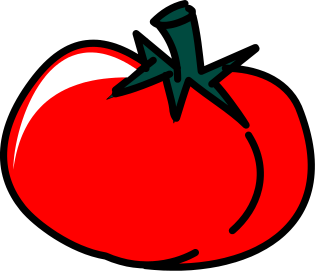

Pomodoro
Reset Work Time
 POMODORO TIMER
25:00
minutes remaining
short break length ->
03:00
long break length ->
15:00
Set Short Break
3 minutes
4 minutes
5 minutes
Set Long Break
15 minutes
20 minutes
25 minutes
30 minutes
START!
PAUSE!